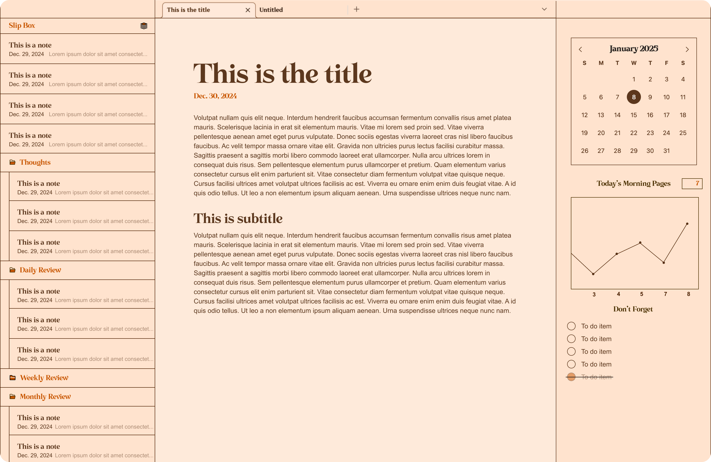

A ridiculously cozy and satisfying local note-taking app. Made for MacOS.
Coded by Grace
I built this macOS note-taking app because my favorite theme——Golden Coffee made by the incredible Kinmury——was tragically discontinued on Obsidian. That eazy-on-the-eyes theme had real mind control over me because, without it, I stopped writing my journal reflections. To fix that, I built an entirely local note-taking app for MacOS that replicates that theme. Submitted to app review on Jan 8, 2025. Will update this site upon approval :)